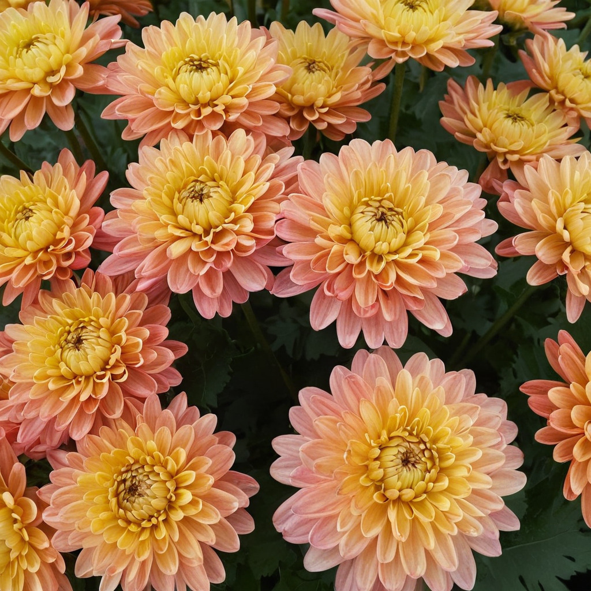
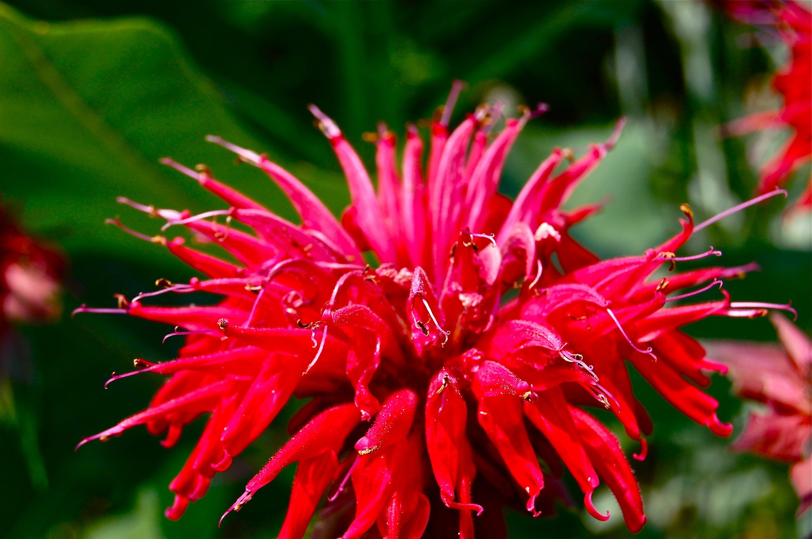

символізують довголіття
та мудрість, є одними з найпопулярніших
квітів осені.
відома як "різдвяна зірка", має яскраво-
червоні листки, що нагадують квіти, і
символізує радість та святковий настрій.

легендарна квітка,
що символізує любов і вірність. Вона стала
символом української культури завдяки
відомій пісні Володимира Івасюка.